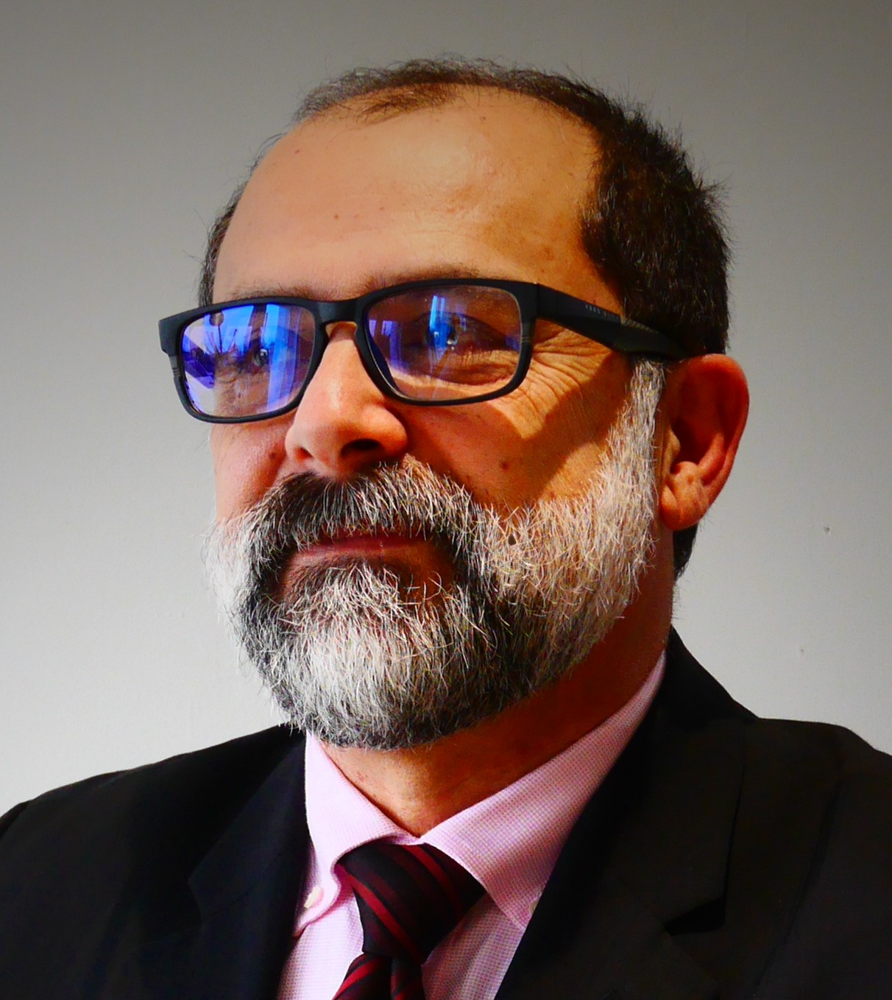

Professeur des Universités | ISAE-Supméca | Laboratoire Quartz
Mes activités portent sur la gestion proactive de l’obsolescence, la pérennisation des systèmes industriels complexes, l’ingénierie système, la re-conception, la résilience des systèmes à longue durée de vie et la formation professionnelle associée à ces enjeux.
Pour les collaborations académiques, projets de recherche, thèses, HDR, publications, conférences, expertises scientifiques et réseaux internationaux.
Accéder au profil scientifiquePour les partenariats industriels, CIFRE, LabCom, audits, diagnostics d’obsolescence, MCO, re-conception, démonstrateurs et projets collaboratifs.
Accéder au profil industrielPour les formations destinées aux cadres, ingénieurs, responsables techniques, responsables obsolescence, MCO, maintenance, supply chain, qualité et transformation industrielle.
Découvrir les formations professionnellesVous pouvez consulter mon parcours complet, mes responsabilités scientifiques, pédagogiques et institutionnelles, ainsi que mes activités de recherche, de formation et de rayonnement.
Télécharger le rapport d’activités complet